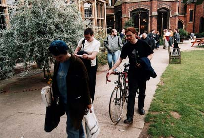

Jeremy Dennis at spacecaption1999

captioncrew-busstop
Alex Ralph,
Damian Cugley,
Jeremy Dennis,
Gavin Burrows.
The CAPTION crew at the bus stop on the way to the con.
captioncrew-drawinga
Jeremy Dennis.
Drawing
captioncrew-fullcrew
Alastair McCullough,
Adrian Cox,
Jennis Scott,
Jeremy Dennis,
Damian Cugley.

captioncrew-jeremyalex
Jeremy Dennis,
Alex Ralph.
exhibition-jeremy1
Jeremy Dennis.
Setting up the exhibition.

exhibition-jeremy2
Jeremy Dennis.
Setting up the exhibition.
guests-bowie
Dickon Edwards,
Jeremy Dennis.

terrydave-spacesuits2
Terry Wiley,
Dave McKinnon,
Jeremy Dennis.
Terry and Dave arrived in space suits.

theatreearthprime-sprayinga
Alex Williams,
Jeremy Dennis,
Jo Charman.
Spraying Alex's hair silver to play Luther Arkwright.

windingup-leaving
Jeremy Dennis,
Alex Ralph,
Martin Wisse,
Adrian Cox.
The organizers and the last few people leave the site at the end of Sunday.